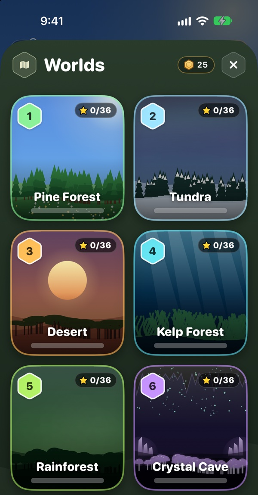
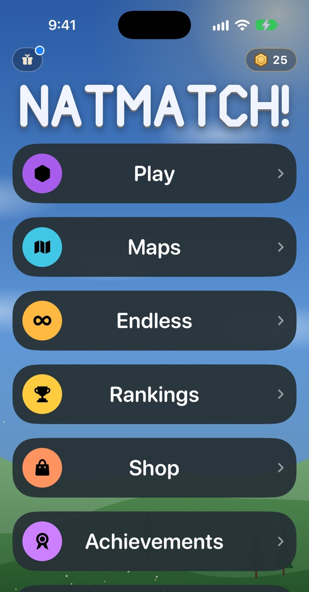
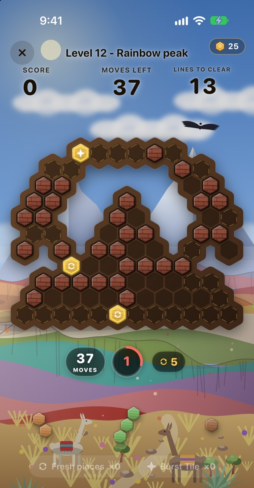
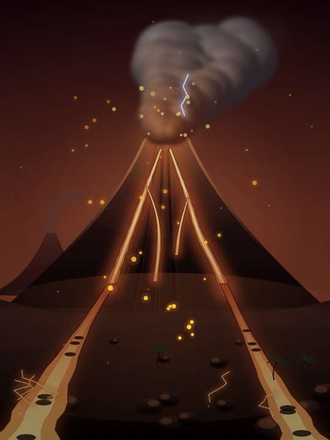
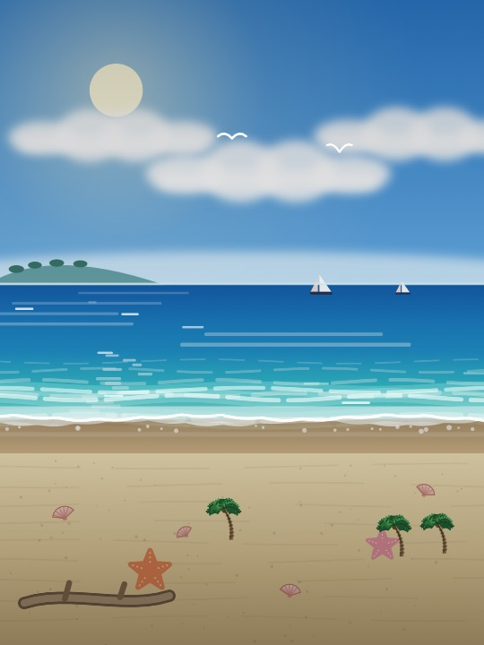
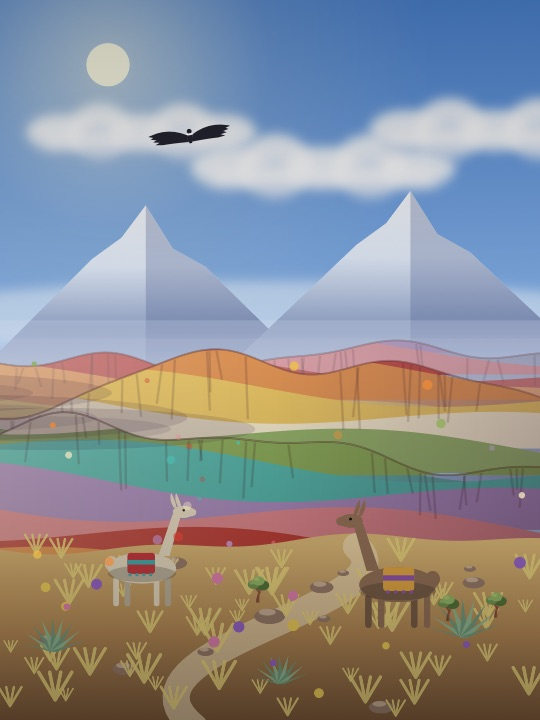

A calm puzzle of wooden tiles
NatMatch! is a calm puzzle game on a honeycomb of wooden tiles. Fit the pieces onto the board, fill whole lines to clear them, and travel through twenty worlds, each with its own scenery, music and surprises.
Twenty worlds, 240 levels
From the Pine Forest to the Rainbow Mountains. Every level's board is shaped like something from its world, from a sunflower to a steam train.
Endless
A game that never ends and gets harder as you go.
Free, with no account
Play for free, with no sign-up. Remove Ads in the Shop turns every ad off for good.
Twenty worlds to travel through
Each with its own scenery, music, nature sounds and obstacle. Here are six of them.
 World 1Pine Forest
World 1Pine Forest World 14Ice Shelf
World 14Ice Shelf
World 15Volcano Island
World 17Beach World 18Waterfalls
World 18Waterfalls
World 20Rainbow Mountains